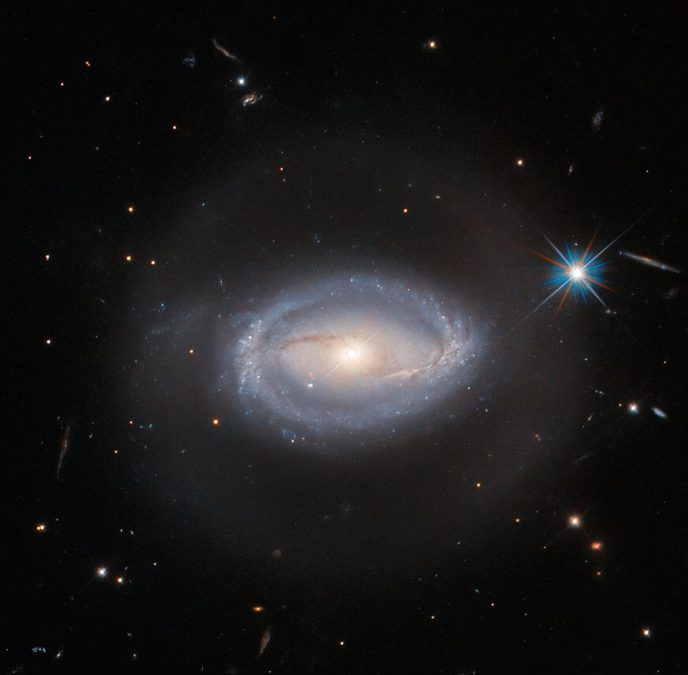
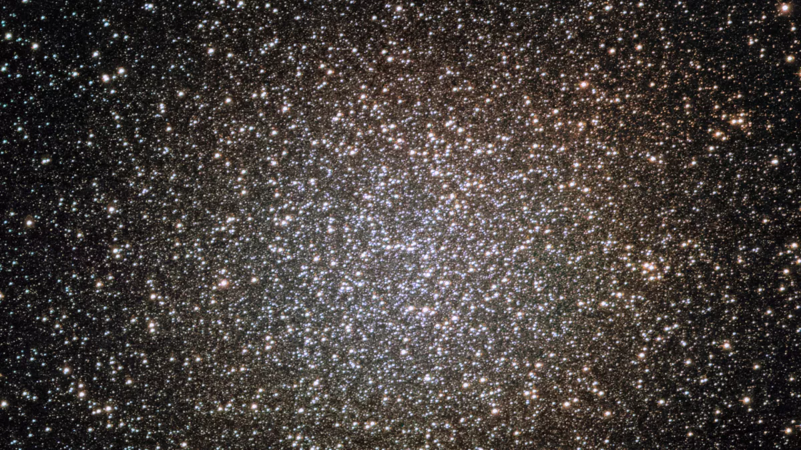
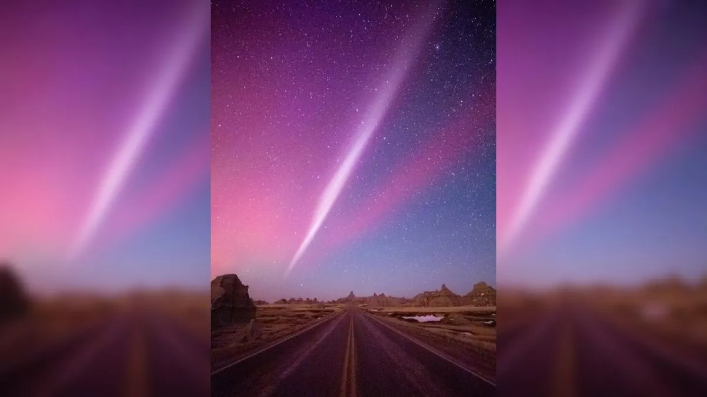

Hubble telescope spies mysterious celestial object that defies classification
The Hubble Space Telescope has imaged celestial object Z-229-15, which is simultaneously classified as a Seyfert galaxy, an active galactic nucleus (AGN), and a quasar.

Pictures from space! Our image of the day
A new infrared imager recently installed at Cerro Tololo Inter-American Observatory (CTIO) in Chile has tested its abilities by observing the Omega Centauri globular cluster.

Mysterious aurora-like phenomenon 'STEVE' appears during strongest solar storm for more than half a decade
The STEVE phenomenon was spotted across the U.S. and in parts of the U.K. after the most powerful solar storm to hit Earth for six years smashed into our planet.